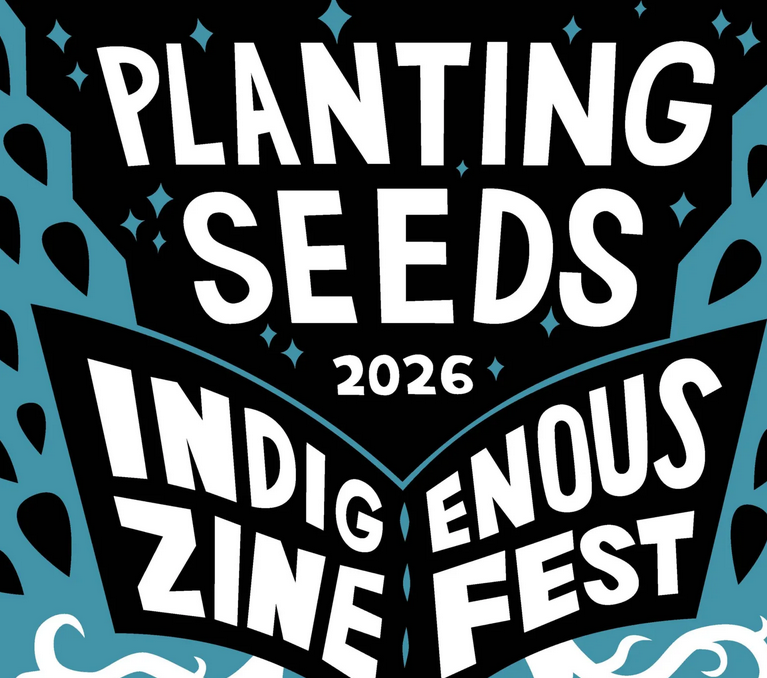

Planting Seeds: An Indigenous Zine Fest
Join ZINEmercado and the Newberry for the second year of Planting Seeds: An Indigenous Zine Fest! The fest will feature zines and prints by Indigenous creators from across the globe. The event will include hands-on art activities led by artists, and a display of zines and comics by Indigenous artists from the Newberry’s collection.
A collection display will be held in the Baskes boardroom from 11am-3pm.